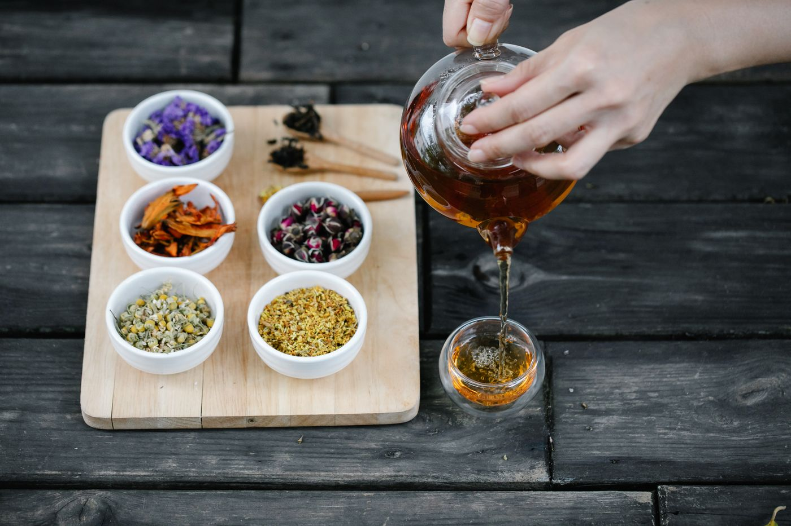
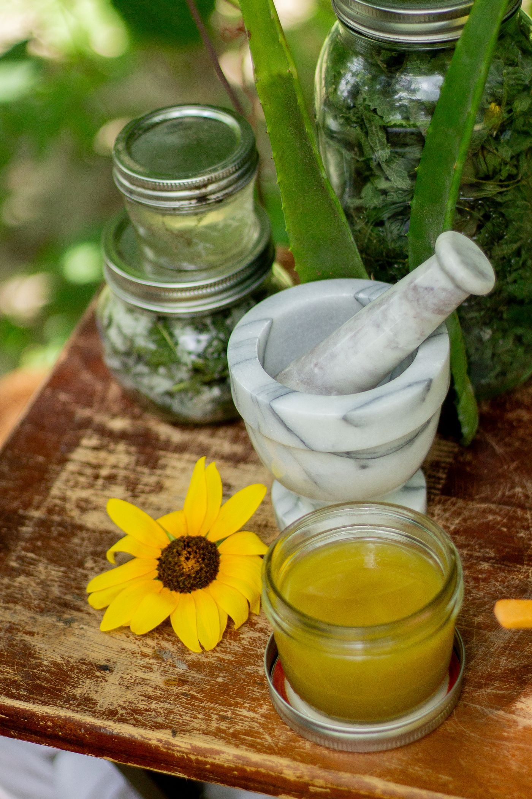

VanaVeda field notes · Vol. 02
A slower shelf for everyday care.
Follow an editorial journey through warming herbal oils, restorative hair tonics, mindful tea steeps, and the ancient plants that bring daily rituals into quiet focus.
Chapter 01 · Morning, simply
Let the water do the work.
Measure the dried leaves. Inhale the citrus and warm cardamom. Watch the amber color deepen. Take the first sip before the day gets noisy.
A good tea ritual needs little theatre—just single-estate herbs, unhurried steeping, and a cup you want to return to every single morning.
Chapter 02 · The Abhyanga Ritual
Warming oils for grounded touch.
Classical Ayurvedic body oils (Taila) formulated with stone-pressed sesame, sweet almond, and botanical decoctions designed for self-massage before warm bathing.
Chapter 03 · Crown & Complexion
Complementary rituals for hair & skin.
Pairing active botanical scalp tonics with delicate facial oils to cultivate daily equilibrium from root to surface.
Neem & Rose Awakening
Clarify reactive skin with gentle neem cloud foam while replenishing dry strands with botanical pre-wash oils.
Chapter 04 · From Soil to Bottle
The Journey of Wild Amla.
Trace the life cycle of our wild-harvested Indian Gooseberry (Phyllanthus emblica)—from shade harvesting to low-temperature extraction.
Origin & Harvest Record
A complete source file should identify the growing region, harvest method, plant part, and supplier lot.
Preparation Method
Processing records should name the extraction medium, temperature range, duration, and finished batch reference.
Batch Evidence Review
Identity and contaminant results should be linked only when matching client-supplied reports are available.

Chapter 05 · Quality Protocol
A clear framework for product evidence.
The quality register distinguishes evidence requirements from documents that have actually been supplied.
Review the transparency framework and see how pending, available, and verified records should be communicated.